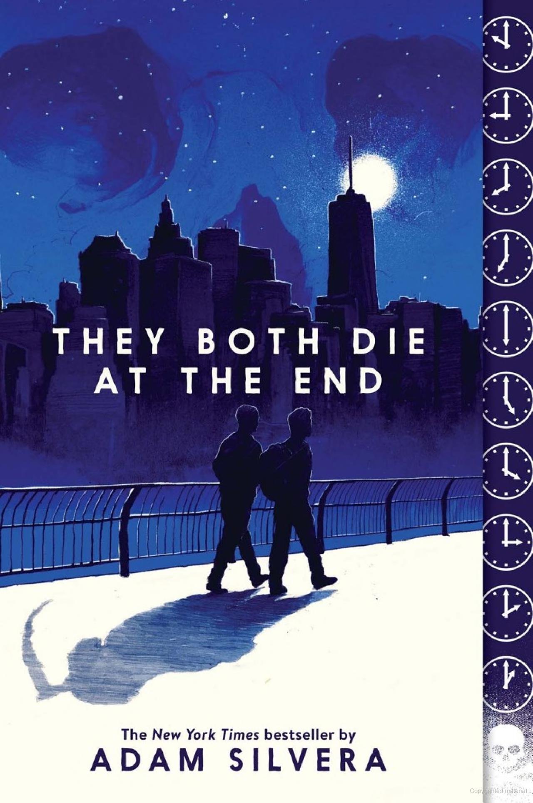

About Me
Hi! My name is Hernoor (Noor for short) and I am a self-identified bookworm. I am a business student studying Data Analytics and Marketing, but don’t let that deter you from the fact that reading and writing is actually a great passion of mine. Some of my favorite genres are Action, Fantasy, LGBT+, Romance, Young Adult, Thriller, and much more!
Book of the Month
Title: They Both Die at the End
Author: Adam Silvera
Genre: Young Adult, Adventure, LGBT, Romance
Rating:
Synopsis & My Review
"On September 5, a little after midnight, Death-Cast calls Mateo Torrez and Rufus Emeterio to give them some bad news: They’re going to die today. Mateo and Rufus are total strangers, but, for different reasons, they're both looking to make a new friend on their End Day. The good news: There’s an app for that. It’s called the Last Friend, and through it, Rufus and Mateo are about to meet up for one last great adventure—to live a lifetime in a single day."